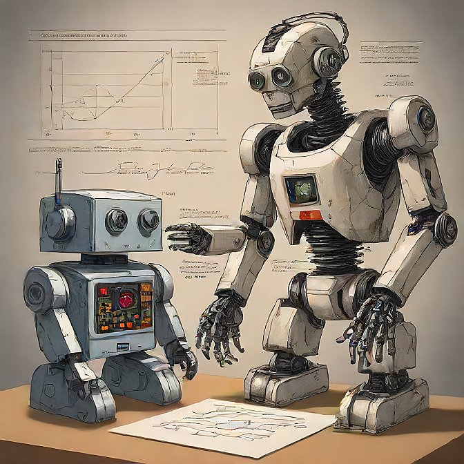

Conquistas
Artur Neves é um exemplo brilhante de talento, dedicação e excelência acadêmica. Desde jovem, ele vem se destacando em várias áreas do conhecimento, especialmente em matemática e tecnologia. Sua trajetória de conquistas começou com a Olimpíada Brasileira de Matemática das Escolas Públicas (OBMEP), onde ele demonstrou habilidades excepcionais, superando milhares de outros estudantes de todo o país. A OBMEP é conhecida por seu rigor e alto nível de dificuldade, e ganhar prêmios nesta competição é uma prova do domínio e da compreensão profunda que Artur tem da matemática. Além da OBMEP, Artur também brilhou no Canguru de Matemática, uma das maiores competições internacionais de matemática. Esta competição testa habilidades lógicas e matemáticas, e a vitória de Artur nesta arena reforça seu status como um dos melhores jovens matemáticos do Brasil. Sua capacidade de resolver problemas complexos e pensar de maneira crítica é admirável. Mas os talentos de Artur não se limitam apenas à matemática. Ele também tem um interesse profundo e uma habilidade excepcional em tecnologia. Isso é evidente em suas conquistas em competições de robótica e mecatrônica. Nessas áreas, Artur não apenas competiu, mas também se destacou, ganhando vários prêmios. Suas vitórias em robótica mostram sua capacidade de combinar conhecimentos teóricos com habilidades práticas, criando soluções inovadoras e eficientes. A mecatrônica, que integra mecânica, eletrônica e computação, é outro campo onde Artur mostrou seu talento, demonstrando uma compreensão sofisticada e uma capacidade de aplicação prática que são raras de se encontrar em jovens de sua idade. Essas realizações destacam não apenas o talento inato de Artur, mas também seu incansável esforço e dedicação ao aprendizado. Ele é um estudante que vai além do esperado, sempre buscando novas oportunidades para expandir seu conhecimento e habilidades. A paixão de Artur pelo conhecimento e sua vontade de superar desafios são características que o tornam um modelo para outros jovens. Artur Neves é, sem dúvida, um jovem excepcional que possui uma combinação rara de habilidades matemáticas e tecnológicas. Seu sucesso em competições renomadas como a OBMEP, o Canguru de Matemática, e nas áreas de robótica e mecatrônica, serve como um testemunho de sua capacidade e potencial. Ele é um exemplo inspirador de como a dedicação, a paixão pelo conhecimento e o trabalho árduo podem levar a conquistas extraordinárias. O futuro é promissor para Artur, e suas realizações até agora são apenas o começo de uma jornada que certamente será marcada por muitos mais sucessos e contribuições significativas ao campo do conhecimento.
